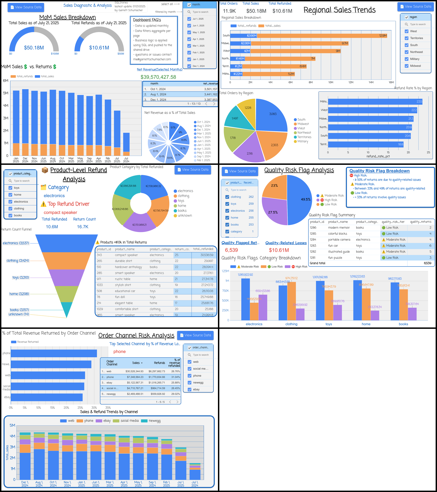

Executive Report — Retail Returns Diagnostic
Prepared for: VP of Sales • Source: Synthetic e‑commerce dataset (ecom_retailer.db)
Context
Analyzes a full operational year of retail sales and returns generated via the data engine to diagnose revenue leakage, churn, and product‑level risks and provide actionable recommendations to leadership.
Executive Summary
- Strong top‑line growth: Sales peaked at ~$12.9M in Q4 2024.
- Refund erosion rising: Refunds exceeded $10.6M, eroding ~21% of net revenue.
- Channel & region hotspots: NewEgg + expedited shipping drive outsized refund rates; Midwest/West amplify losses.
- Customer risk: Military and reseller segments post highest refund rates (low volume, high risk).
- Product quality: Defects, misdescription, and damage comprise a growing share of returns.
Key takeaway: Growth momentum is real, but unchecked returns threaten profitability. Aim to reduce refund rates below 20% to safeguard margin.
Achievements & Strengths
- Strong Initial Sales Momentum: Sales ramped up rapidly post‑launch, peaking during Q4 2024 with total Q4 sales reaching ~$12.9M — the strongest quarter to date.
- Healthy Conversion Trends in New Cohorts: While average CLV is still maturing for newer cohorts (Q2–Q3 2025), return rates are declining and acquisition is growing — signaling improved onboarding efficiency and lower refund risk over time.
- Web Channel Dominance: Web sales drove $30.5M in revenue with a 26.76% refund rate — the leading channel, generating more than all other channels combined.
- Payment Mix Is Balanced: Refund rates across methods ranged from 20.1% to 22.1%, indicating healthy customer trust and no standout refund risks.
Challenges & Risks
- Eroding Net Revenue: Total refunds across all channels surpassed $10.6M, with return rates exceeding 20% of revenue in several months during 2025.
- Shipping Speed → Return Risk: Expedited shipping introduces volatility; Overnight shipping generated $1.61M in refunds on $7.5M in sales — a 21.5% refund rate.
- Regional Return Hotspots: The Midwest and West show both high sales and high return rates, requiring localized intervention.
- High‑Risk Customer Behavior: Top returners include loyal high‑CLV customers and suspected resellers; the military segment posted the highest return rate overall.
- Product Quality Blind Spots: Refund reasons tied to defects, misdescription, and damage comprise a growing share of losses — often concentrated in high‑volume SKUs.
Strategic Solutions
- Lower refund rates below 20%: Improve product detail pages, customer education, and implement SKU‑level QA flags.
- Targeted customer risk mitigation: Review top 20 returners — especially military and reseller segments — and consider loyalty/return policy adjustments.
- De‑invest in volatile channels: Reevaluate NewEgg, which generated $560K in refunds on $2.4M in sales (29.02% refund rate).
- Recalibrate fulfillment strategy: Realign expectations on expedited shipping offerings to reduce mismatch and avoidable returns.
- Activate SKU‑level quality controls: Leverage the Product Quality Risk Flag System to prioritize high‑impact fixes and give CX/Ops/Product teams clear visibility.
| Metric | Value |
|---|
| Gross Sales | $50.1M |
| Refunds | $10.6M |
| Net Revenue Erosion | 21.2% |
| Refund Peaks | Q4 2024: $2.3M (~18.5%); Q2 2025: $3.1M (~24.1%) |
Regional Insights
- South & Midwest drive top sales; refund rate >20% across all regions → systemic issue.
- Midwest & West are leverage zones — small improvements save millions.
- Military region has highest refund rate; requires tailored strategy.
- Territories: small revenue but high returns; review viability.
Data Overview
Orders, Return Items, Customers, and Product Catalog joined into engineered views: monthly sales/returns, top returners, return reasons, CLV by cohort, loyalty behavior, shipping impact, and product‑level return rates.
Recommendations
- Launch a Return Reduction Initiative targeting shared drivers.
- Deep dives into Midwest & West regions.
- Tailored policies for Military & reseller segments.
- Reassess territory fulfillment for profitability.
- Scale Product Quality Flag System for SKU‑level QA.
Notebook Viewer
Preview the notebook directly, or open it full size.
Open in new tab ↗
Dashboard Highlights

Returns, revenue, and channel insights — dashboard highlights
Links